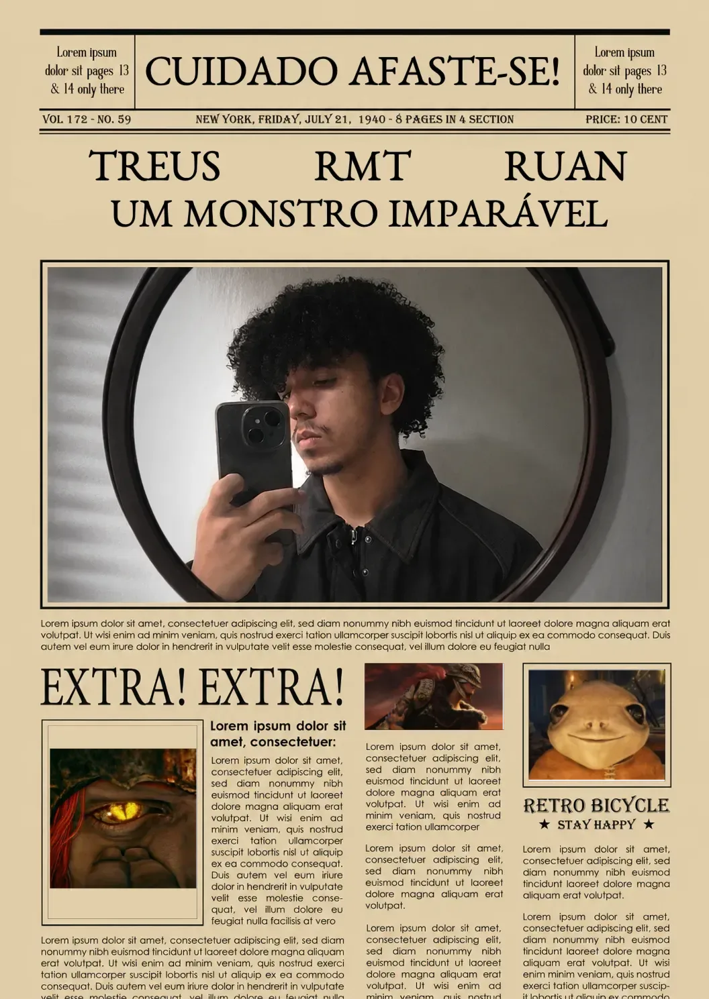
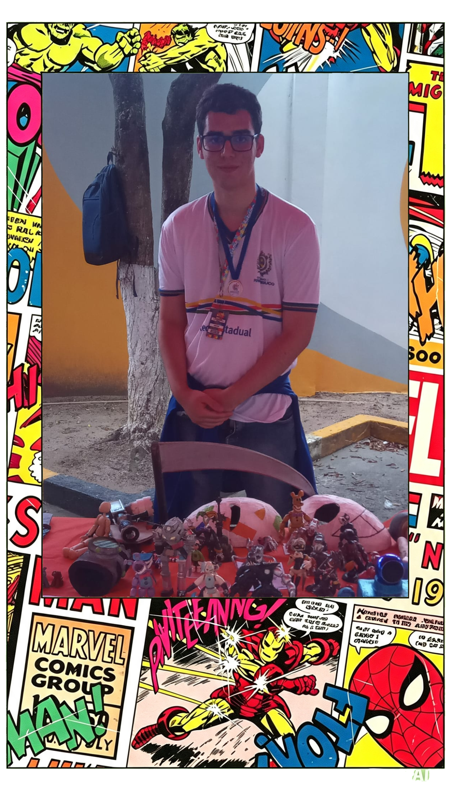

Ruan Miguel Torres
GAMEPLAYS
Sei lá, eu jogo jogos difíceis, e de vez em quando posto isso nas redes sociais,
faço desafios de não tomar dano e gasto muitas horas e paciência
pra derrotar chefes
-_-
o fascínio do que ainda surpreende
curiosidades autorais
Aqui você encontra as curiosidades trazidas por quem faz parte desta revista. São fatos escolhidos a dedo, que despertaram interesse real e que dizem um pouco sobre os gostos e descobertas de cada autor.
Cada curiosidade carrega um pedaço de quem a trouxe — temas que fascinam, perguntas que ficaram, respostas que valem a pena compartilhar com você.

Sei lá, eu jogo jogos difíceis, e de vez em quando posto isso nas redes sociais,
faço desafios de não tomar dano e gasto muitas horas e paciência
pra derrotar chefes
-_-

Sou José Gleidson, tenho 19 anos e sou aluno do EREMPAF. Comecei a modelar com massa de modelar e depois conheci o biscuit. Minha primeira escultura foi um Digimon vermelho com fones de ouvido. Gosto muito de modelar, pois me faz bem.
Ler curiosidade →